FireP4j is a plugin for FirePHP. It was developed by Thomas Endres.
FirePHP is an addon for FireBug. It was developed by Christian Dorn.
The FireP4j project is licensed under the Apache License, Version 2.0 (the "License"). You may not use this file except in compliance with the License.
You may obtain a copy of the License at http://www.apache.org/licenses/LICENSE-2.0
Unless required by applicable law or agreed to in writing, software distributed under the License is distributed on an "AS IS" BASIS, WITHOUT WARRANTIES OR CONDITIONS OF ANY KIND, either express or implied.
See the License for the specific language governing permissions and limitations under the License.
Using FireP4j, one can easily log to the console without writing to the HTML output directly (where the log entry will probably be overseen) or to log files (easily reaching 10000 lines+).
Some of the advantages of direct logging are:
FireP4j is a Groovy project. Automated test cases were written using JUnit 3.8. It is implemented in a thread safe way so you can use it from different threads.
Contents:In order to run FireP4j, the following prerequisites have to be fulfilled:
If you've met all these prerequisites, we're ready to go!
In order to use FireP4j, the FireP4j library needs to be on your classpath.
The first thing to do is to get the JAR file from the git hub: http://www.github.com/theone1984/FireP4j
All you have to do is to add it to your buildpath. In Eclipse, this is done the following way:
When you are using FireP4j from a Java application, you also have to include the file "groovy-all-1.7.0.jar" into your classpath.
Be aware that the jar files have to be uploaded to the server. Using some frameworks, the libraries need to be in a path other than "lib". Consult the documentation of the framework you are using for further instructions.
Now we can use FireP4j within our project!
For the first test run, you have to import some FireP4j classes into the class file where you want to use it.
import firep4j.FireP4j;
import firep4j.profile.*;
In order to run correctly, you habe to set a language profile.
FireP4j.setProfile(new JavaProfile());
If you're using Groovy & Grails, please specify GroovyProfile instead of JavaProfile.
Now you can try to get a FireP4j instance (as parameters, you need to pass the HttpServletRequest and HttpServletResponse objects).
FireP4j fireP4j = FireP4j.getInstance(request, response);
We got our FireP4j object, so now we'll log something to it.
fireP4j.log("Hello FirePHP");
Using basic servlets, our complete example would look like the following:
package foobar;
import javax.servlet.http.*;
import firep4j.FireP4j;
import firep4j.profile.*;
public class SomeServlet extends HttpServlet {
public void doGet(HttpServletRequest request, HttpServletResponse response)
throws ServletException, IOException {
FireP4j.setProfile(new JavaProfile());
FireP4j fireP4j = FireP4j.getInstance(request, response);
fireP4j.log("Hello FirePHP");
PrintWriter out = response.getWriter();
// TODO write HTML to out
}
}
Using Grails, the example would look like:
package foobar
import firep4j.*
import fiejava.profile.*
class TestController {
def test = {
FireP4j.setProfile(new GroovyProfile())
def fireP4j = FireP4j.getInstance(request, response)
fireP4j.log("Hello FirePHP")
// TODO do something else
}
}
It's time to power up the application server and see what we get at the front end:
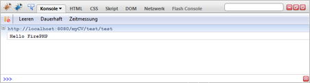If you hover over the ouput, you will also see the file name and line number where the output was invoked:
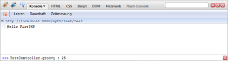Now that we know how to do a simple example, let's dig into more sophisticated logging issues!
Whenever you do not want to log to FireP4j, you can just call the method setEnabled().
Passing 'false' to that method will disable FireP4j logging, passing 'true' to it will enable logging once again.
The current status of FireP4j can be determined using getEnabled().
fireP4j.setEnabled(false);
fireP4j.getEnabled() // Will result in 'false'
fireP4j.log("foobar1"); // Will not be logged
fireP4j.setEnabled(true);
fireP4j.getEnabled() // Will result in 'true'
fireP4j.log("foobar2"); // Will be logged
Every log entry can have a label. The label is specified as a second parameter of the log method.
fireP4j.log("value", "label");
This will result in the following output:
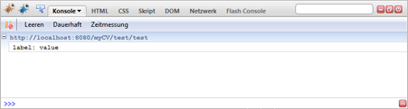There are four different log levels that can be directly output:
You can use the different log levels by calling different methods:
fireP4j.log("LOG");
fireP4j.info("INFO");
fireP4j.warn("WARN");
fireP4j.error("ERROR");
This will result in the following output:
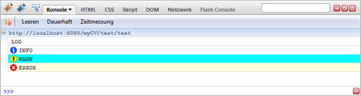Of course, all of these methods can also be called using a label argument.
When you want to output data as a table, you can use the table() method. As an input, it takes an object of type firep4j.Table and a label.
You can create a table by constructing it and adding some headers and rows to it. Afterwards, you log the table to FireP4j:
Table table = new Table(2); // The number indicates column count
table.setHeaders("title", "value"); // Table headers
table.addRow("title1", "value1"); // Table entries
table.addRow("title2", "value2");
fireP4j.table(table, "foobar");
This will result in the following output:
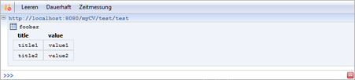If you don't want to log to the FireBug console, but to the FireBug net tab, you can use the method dump(). It works just like the other logging methods except that the output is displayed differently.
fireP4j.dump("value", "label");
You can group mulitple log entries. This will result in a list of log entries that can be collapsed or opened.
fireP4j.group("group label");
fireP4j.log("entry 1");
fireP4j.info("entry 2");
fireP4j.endGroup();
This will result in the following output
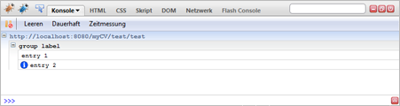Groups can be specified recursively, so you can also specify a group of groups:
fireP4j.group("main group");
fireP4j.group("sub group 1");
...
fireP4j.endGroup();
fireP4j.group("sub group 2");
...
fireP4j.endGroup();
fireP4j.endGroup();
When logging an object or array, the output will be serialized as a JSON string. Complex structures can also be serialized as long as they implement the marker interface Serializable.
Let's look at a Person object that consists of the person's first and last name and a referenced House object containing only the address:
House house = new House("123 Fake St.");
Person person = new Person("Bart", "Simpson", house);
fireP4j.log(person);
This will result in the following output:
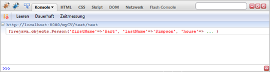If you click the log entry, the following view will open:
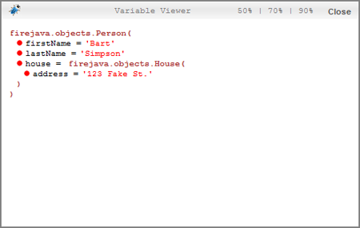Within this view, you can collapse/open every property allowing you to look at the objects in detail.
The dots in front of the names indicate property visibility:
You can also log arrays, HashMaps, or even arrays of HashMaps etc.:
// Define HashMap
fireP4j.log(hashMap);
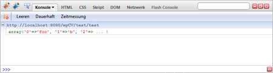
When clicking on the log entry, you will see each entry of the HashMap in more detail:
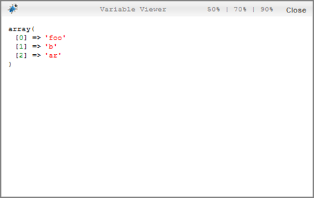Sometimes, you will want to know the stacktrace of an exception. This can be done by logging it:
Exception exception = new Exception("intentional exception");
fireP4j.log(exception);
This will result in the following output:
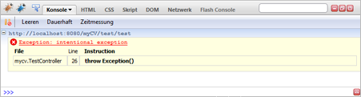
Within the log entry, all stack trace elements are listed (with the exception of Java reflection or Groovy metaClass methods).
If you specify a label parameter for the exception, it will be ignored.
You can also trace the current line. The method trace() takes a neccessary label parameter that must not be empty.
fireP4j.trace("current line");
The output of this method looks like the exception output shown before (label and icon are different, though). It shows the stack trace of the current line.
The following features don't work in version 0.9!
When you want to log all uncaught exceptions (with a trace) in FireP4j (using the exception output), you can use the following methods:
The methods require an argument 'thread' specifying the thread for which the handler is installed (all the handlers are defined per thread). If no thread is specified, the calling thread is used.
Unregistering exception handlers works the same way:
When exception handlers are installed, all uncaught exceptions are logged to FireP4j:
fireP4j.registerExceptionHandler();
if (exceptionNeeded) {
throw new Exception("intentional exception");
}
If the exception is thrown and not caught, this will result in the following output:
The last thing to do is to restrict the FireP4j output. Sometimes, you may not want to output every property of every object. For this purpose, you can define object filters. Object filters take the class name (in package notation) and some field names as input. The corresponding fields in the class will not be displayed by FireP4j.
You may also want to restrict serialization to some depth levels. This can be done by setting the maxDepth() property:
fireP4j.setMaxDepth(2);
This will restrict the output to a maximum of two depth levels (the initial level plus one extra level). Every property that exceeds the max depth level will be output as string 'Max depth (2)'.
You may also want to filter the trace output (if, for example, a helper class is always output as a trace element). For this purpose, you can define trace filters:
There are four different filter types:
If you want to filter all classes that start with 'java.text' from the trace output, you may do the following:
fireP4j.addTraceFilter(Filter.FilterType.STARTS_WITH, "java.text");
If you do this, no trace or exception output will contain a trace element of some class starting with "java.text".
Finally, you may also want to restrict the stack trace length of trace and exception outputs. You can do this using the setMaxTraceCount() method:
fireP4j.setMaxTraceCount(10);
This will restrict stack trace length to a maximum of ten stack trace elements. Further elements will be filtered.
It is sensible to comment every FireP4j instruction before using the code in production, as FireP4j might output sensitive information to the FireBug console.
The author of FireP4j DOES NOT take any responsibility for information that was output using this software.
That's all there is to FireP4j. Have fun using it!
If you want to help me writing better software, tests are always welcome. If you encounter a bug, please let me know so I can fix it. You can also enhance the code by rewriting some passages or using it in some other library. Just make sure you don't violate the Apache license.
Thanks for using my software.
Best wishes,
Thomas